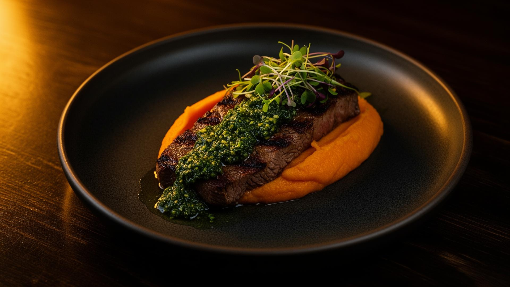
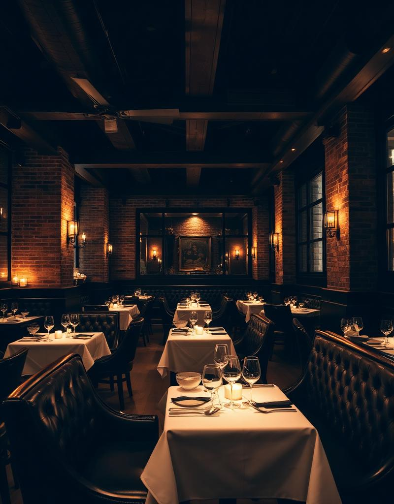
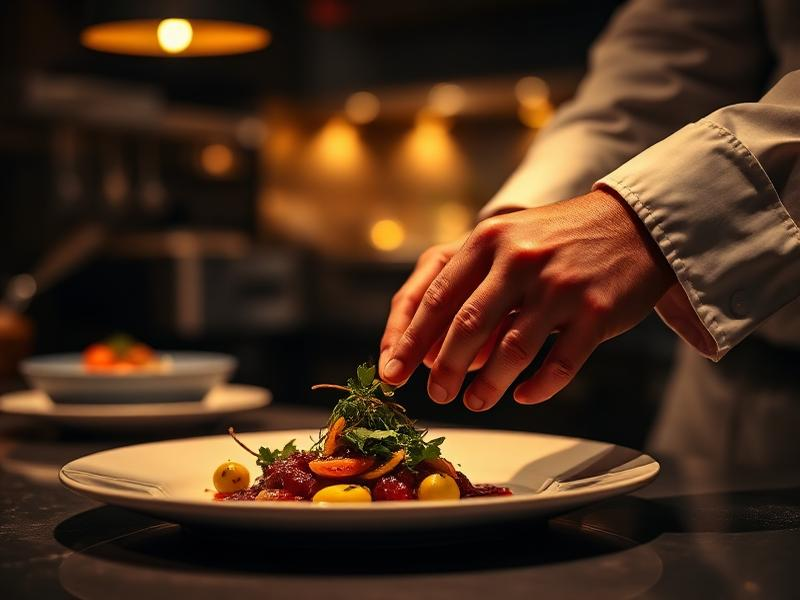
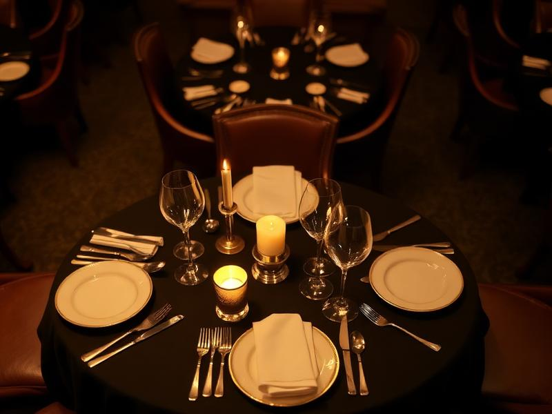
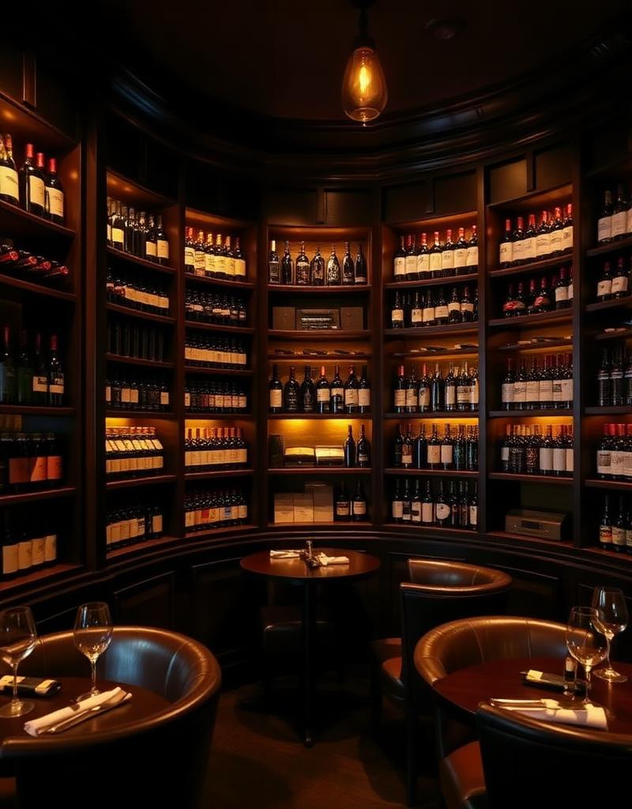

Nuestra Historia
En Tierra Colorada Gastro, cada plato es un homenaje a la riqueza culinaria del Paraguay. Nuestro chef reinterpreta recetas ancestrales con técnicas contemporáneas, utilizando ingredientes de pequeños productores locales que cultivan con pasión y respeto por la tierra.
Desde las fértiles tierras del Chaco hasta los ríos cristalinos del Paraná, cada ingrediente cuenta una historia. Nuestra misión es transformar esa historia en una experiencia gastronómica inolvidable que celebre la identidad paraguaya con elegancia y autenticidad.
La Experiencia




Reservaciones
Para garantizar una experiencia exclusiva, recomendamos realizar su reserva con anticipación. También organizamos eventos privados y cenas de degustación personalizadas.